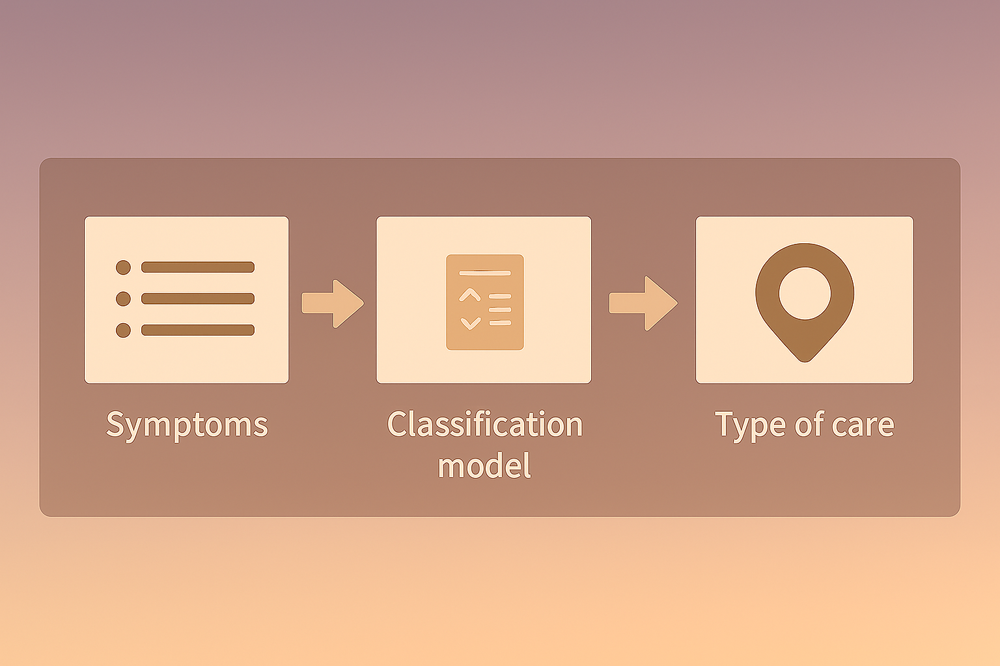

Patient Triage – Personal Project (In Progress)
This is an ongoing personal project focused on streamlining the initial triage process in healthcare settings. It aims to use machine learning to classify patient-reported symptoms and recommend an appropriate level of care—urgent, non-urgent, or self-manageable.
Objectives:
- Build a classification model based on symptom data
- Design a user interface that supports both patients and clinicians
- Explore weighted logic for prioritizing red-flag symptoms
- Evaluate healthcare outcome efficiency based on triage performance
Stack (Planned):
Python, Streamlit, Scikit-learn, Git, Figma (for prototyping)
Status:
Early development stage – model architecture and logic mapping in progress